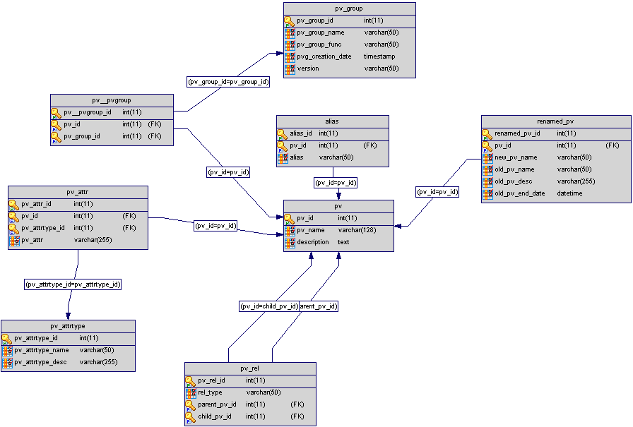

This is the start of a document that describes the MASAR service. This document describes an implementation that is a combination of Python and C++. The IRMIS access is through PYIRMIS interface layer. To separate the interface with V4 service, we add a layer called data source layer. With the Data Source Layer, each facility can plug in their own RDB fundamental with minimum modification to data source layer, which mainly focuses on the interfaces to replace the PYIRMIS layer.
The MASAR is an EPICS V4 service, which takes machine snapshot data,
archives data, and retrieves data.
As described above, the compare and restore functions are left to the client.
For NSLS II, a default pv_group, which is a collection of pv names, will be
configured in advance. User can either use the default pv_group configuration,
or, with administrative privilege, create a new configuration. If a client
wants to combine pv_groups, it creates, again with administrative
privilege/authorization, a new configuration. Each configuration has a name,
description, and created time. One configuration might have more than one
snapshot event associated with it where the snapshots are taken separately at
different times.
|
| MASAR Architecture |
The underneath IRMIS database schemas are shown as below:
 |
| IRMIS-MASAR database schema |
|  |
| IRMIS-PVGROUP database schema |
structure timeStamp_t
long secsPastEpoch
int nanoseconds
int userTag
structure alarm_t
int severity*
int status*
string message
structure nameValuePair_t
string name
string value
{NONE, MINOR, MAJOR, INVALID, UNDEFINED }
{NONE, DEVICE, DRIVER, RECORD, DB, CONF, UNDEFINED, CLIENT }
The service consists of a client that communicates with a server via
channelRPC requests.
The arguments structure for the channelRPC is defined as:
structure arguments
string function
nameValuePair_t[]nameValues
The result is an NTTable, i. e. it is a structure like:
(NOTE: The element order in labels has to match with the value array order.)structure NTTable typeIdentifier_t typeIdentifier alarm_t alarm timeStamp_t timeStamp string[] labels <arrayType> xxx . . .
As stated in [1], "typeIdentifier is a long whose bitfield value is used to uniquely identify a PVStructure instance as an example of a data type. The first 16 bits (of 64) are reserved to identify the normative types."
An example of NTTable structure is as below:
structure NTTable
typeIdentifier_t typeIdentifier
alarm_t alarm
timeStamp_t timeStamp
string[] labels // length is same as number of following fields
// label name for each column
// the order has to be consistent with the following fields
string[] pvnames // pv name list
alarm_t[] alarms // alarm for each individual pv
timeStamp_t[] timeStamps // time stamp for each individual pv
double[] values // value for each individual pv
. . .
As shown in above data structure, a client select a function, and provides arguments to the server via an array of nameValuePair_t. The server acts according given function and arguments. Following are some examples how a server responds to requests. The examples show how the PYIRMIS layer handle a request, and how PYIRMIS insulates the service from IRMIS schema changes.
structure arguments
string function saveSnapshotConfig
nameValuePair_t[]
nameValuePair_t name "pvName" value "pvname1,pvname2,pvname3,..."
nameValuePair_t name "configName" value "config name"
nameValuePair_t name "configDescription" value "config description"
nameValuePair_t name "groupName" value "group name1, group name2, ..."
nameValuePair_t name "serviceName" value "SR commissioning"
nameValuePair_t name "serviceDescription" value "description for storage ring commissioning service config"
The client sends the above to the server via a channelRPC request. The service communication control layer receives the command from client and passes it to the service layer, The service layer parses the function to decide which action it should do. In this case, it passes the argument (function+nameValuePair) to data source layer.
When the data source layer receives this command it converts the argument data into a Python dictionary data (see structure in data source layer), and calls PYIRMIS. The PYIRMIS uses the data to construct a SQL query command, executes RDB query, and returns data or operation status. For this function, it returns operation status, which is true if success, or false if failed. The status is presented in the NTTable alarm field. The data source layer creates an NTTable that describes what was obtained from PYIRMIS. The NTTable is returned to the service layers which returns it to the service communication layer. The service communication layer completes the channelRPC request.
[Function]: saveSnapshotConfig. [nameValuePair_t]: pv name list, snapshot name, description [Result]: status as NTTable (EPICS V4 normative type)
structure arguments
string function retrieveSnapshotConfigs
nameValuePair_t [...]
If nameValuePair is an empty array all the snapshot configurations are returned otherwise it returns results which satisfies the constraints specified by the nameValuePair array. The values for the nameValuePairs can be any combination of the values allowed for saveSnapshotConfig.
An example is:
structure arguments
string function retrieveSnapshotConfigs
nameValuePair_t[]
nameValuePair_t name "configName" value "config name"
nameValuePair_t name "serviceName" value "SR commissioning"
This returns the configuration where configName="config name" and serviceName="SR commissioning"
The raw data returned from PYIRMIS is a Python dictionary data as below (conceptual only):
{
'serviceName': string [],
'serviceDesc': string[],
'servicePropName': string [],
'servicePropValue': string [],
'serviceID': int[],
'serviceCreateTime': datetime[],
'configName': string[],
'configDesc': string[],
'configID': int[],
'configVersion': int[],
'configCreateTime': datetime[],
}
The Python dictionary is converted into a NTTable, and returned.
Another example is:
structure arguments
string function retrieveSnapshotConfigs
nameValuePair_t[]
This return all configurations stored in IRMIS database, and the data type is as above.
The client sends the argument to the server. The service communication control layer receives the command from client and passes it to the service layer, The service layer parses the function to decide which action it should do. In this case, it passes the argument (function+nameValuePair) to data source layer.
Like saveSnapshotConfig, the argument is converted to a Python dictionary data in the data source layer, and then passed to PYIRMIS which returns data or status. The PYIRMIS uses the data to construct a SQL command, executes a RDB query to get the data. In this case, the raw data (ResultSet format) from IRMIS is converted by PYIRMIS into a Python dictionary data, and the status is set in alarm field.
[Function]: return snapshot configure(s) satisfying given constrain(s)
[nameValuePair_t]: NULL to retrieve all snapshot configures, or nameValuePair constrain(s)
[Result]: NTTable includes
service name, created time, description, and id
config name, created time, description, and id
structure arguments
string function saveSnapshot
nameValuePair_t[]
nameValuePair_t name "configID" value "config id"
nameValuePair_t name "serviceID" value "service id"
nameValuePair_t name "eventName" value "name for this particular snapshot event"
nameValuePair_t name "eventDesc" value "description for this particular snapshot event"
In this example the client identifies a particular configuration by
combining configID="config id" and serviceID="service id", and wants the
server to record this event with eventName="name for this particular
snapshot event" and eventDesc="description for this particular snapshot
event". If server finds the configure, it takes a snapshot, and stores data
into IRMIS, otherwise, returns an error.
The argument nameValuePair can be any combination of the values for saveSnapshotConfig. The service layer gets a list of channel names from the data source layer. It then makes channel access calls to get a snapShot. It saves the data by again calling the data source layer. It returns an NTTable with labels as an empty array. The alarm fields reports the status of the request.
The data captured in this function includes the value, status, severity, and time stamp for each pv, and the event name and event description, which can be from client as nameValuePair, or default value if they are not given by client. If any pv is disconnected its status is disconnected and the value is NaN.
When the data source layer receives the value, it converts data into a Python dictionary (see structure in data source layer), and call PYIRMIS. The PYIRMIS uses the data to construct a SQL command, executes a RDB command to save data, and returns the status.
[Function]: take a snapshot and save the result into IRMIS database [nameValuePair_t]: nameValuePair for identifying a particular snapshot [Result]: status as NTTable
structure arguments
string function retrieveSnapshot
nameValuePair_t[] [nameValuePair1, nameValuePair2, nameValuePair3]
An example is: structure arguments string function retrieveSnapshot nameValuePair_t[] nameValuePair_t name "configID" value "config id" nameValuePair_t name "serviceID" value "service id" nameValuePair_t name "eventId" value "event id" This identifies a particular snapshot event by combining configID="config id", serviceID="service id", and eventId="event id". If server finds this event, it retrieves this snapshot, and returns data back to client, otherwise an error.
The client sends above information to server. Once the service communication control layer receives the command from client, it parses the function to decide which action it should do. In this case, it passes the argument (function+nameValuePair) to data source layer through service layer.
When the data source layer receives this command, it the argument data into a Python dictionary data (see structure in data source layer), and call PYIRMIS. The PYIRMIS uses the data to construct a SQL query command, executes a RDB query, and returns data or operation status. In this case, the raw data (in ResultSet format) from IRMIS is converted into a Python dictionary, and returned back to service. The status is presented in alarm field. If the SQL query fails, it return an error.
[Function]: return a particular snapshot satisfying given constraints. [nameValuePair_t]: nameValuePair(s) [Result]: snapshot names, event time, description, and data as NTTable
structure arguments
string function getLiveSnapshot
nameValuePair_t []
nameValuePair_t name "configID" value "config id"
nameValuePair_t name "serviceID" value "service id"
A particular snapshot event is obtained by combining configID="config id"
and serviceID="service id". If server finds this config, it takes a
snapshot, and returns data back to client, otherwise an error.
The client sends above to server. Once the service communication control layer receives the command from client, it parses the function to decide which action it should do. In this case, the behavior is similar with saveSnapShot: the service layer gets a list of channel names from the data source layer. It then makes channel access calls to get a snapShot. It constructs a NTTable with those data. The alarm fields reports the status of the request. If any pv is disconnected its status is disconnected and the value is NaN.
This function returns the NTTable with labels as an empty array, i. e. no data only alarm and timeStamp, are returned.
[Function]: return a particular snapshot satisfying given constrain with live data for each pv from IOC [nameValuePair_t]: nameValuePair(s) [Result]: snapshot names, event time, description, and data as NTTable
The client code consists of two parts: 1) The actual client API, and 2) The code that uses pvAccess to communicate with the MASAR server. The client API is for a python client. The pvAccess code is implemented in C++.
The API is:
NTTable = masar(function, **kws)
# logic depends on function.
# in another word, how to combine name/value pair depends on function.
list of function (part):
- saveSnapshotConfig
[Description]: config a snapshot, and save configuration into IRMIS database
[Argument]: nameValuePair -- list of pv group names, snapshot config name, description
[Result]: status as NTTable (EPICS V4 normative type)
- retrieveSnapshotConfigs
[Description]: retrieve all snapshot configures satisfying given constrains
[Argument]: All snapshot configures if NULL, or configures satisfying nameValuePair constrain(s)
[Result]: NTTable includes
service name, created time, description, and id
config name, created time, description, and id
- saveSnapshot
[Description]: save a snapshot into IRMIS database
[Argument]: nameValuePair for a particular snapshot
[Result]: status as NTTable
- retrieveSnapshot
[Description]: retrieve a particular snapshot satisfying given constrain, and data for each pv archived in IRMIS
[Argument]: nameValuePair(s)
[Result]: snapshot names, event time, description, and data as NTTable
- getLiveSnapshot
[Description]: take a particular snapshot satisfying given constrain, and live data for each pv from IOC
[Argument]: nameValuePair(s)
[Result]: snapshot names, event time, description, and data as NTTable
- retrievePvGroup
[Description]: retrieve list of pv group used for MASAR service from IRMIS
[Arguments]: list of all groups if NULL, or group(s) satisfying nameValuePair constrain(s)
[Result]: group name, id, description as NTTable
[PYIRMIS]: the data returned from PYIRMIS is a Python dictionary as below:
{ 'pvGroupName': string [],
'pvGroupDesc': string [],
'pvGroupID': int[],
'pvGroupCreatedDate': datetime [],
'pvGroupVersion': string[]
}
- retrievePvs
[Description]: retrieve list of pv group used for MASAR service from IRMIS
[Arguments]: list of all groups if NULL, or group(s) satisfying nameValuePair constrain(s)
[Result]: group name, id, description as NTTable
[PYIRMIS]: the data returned from PYIRMIS is a Python dictionary as below:
{ 'pvName': string [],
'pvDesc': string [],
'pvAttr': string [{'attrName1': attrValue1,
'attrName2': attrValue2
}]
}
This implements channelRPC, i. e. it is the code with which the client communicates. It queues client requests. It has a separate thread that services the queue. When it takes a request from the queue it looks at arguments.function. This determines which function it calls. It calls the service passing it the arguments. The function must return an NTTable which is passed back to the client completing the channelRPC for a get function.
The implementation will be in C++.
By default, a MASAR server takes snapshot with default configuration periodically.
Initially two functions will be created: 1) saveSnapshot, and 2) retrieveSnapshot. The implementation is in C++.
The Layer is a C++ API. It is passed arguments.nameValues, and returns an NTTable.
The API to interface with service layer:
NTTable = masar(structure arguments)
The initial version will call the PYIRMIS server. Interfaces to other databases may be implemented in the future.
The API to interface with PYIRMIS layer is in Python, and callable by PYIRMIS:
[] = "function"(arguments)
function is provided by PYIRMIS, and sent by client in pvstructure arguments.
The function name from client is mapped into or shared by PYIRMIS function name.
The initial implementation adopts the function name as described above.
Return:
Python dictionary. For get operation, the first must be labels array (string), for example:
{
'labels': string[],
'pvnames': string[],
'severity':int[],
'status': int[],
'message': int[],
'sec': long[],
'nanosec': int[],
'userTag': int[],
'values': double[],
}
For set operation, return status.
This section gives a brief introduction about the PYIRMIS layer. The PYIRMIS is a standalone Python module, which provides an access to IRMIS database, and hides all business logic in the API. With this solution, the database query, and all business logic are done within PYIRMIS layer. Since database business logic is hidden in this layer, it insulates the service from underneath RDB, and minimizes the impact caused by changes with IRMIS database for example, any database schema change. Each API receives a Python dictionary as parameter, and returns back a Python dictionary as result.
Here are some more details what happens inside the PYIRMIS layer. The nameValuePair is converted to Python dictionary data, and passed to PYIRMIS layer. Therefore, PYIRMIS is able to construct a SQL command to query to IRMIS database. There are 2 ways to construct a SQL command: (1) directly use the RDB keyword as the name of nameValuePair; or (2) use a dictionary to map the name of nameValuePair to the RDB keyword. For the first solution, the advantage is that it directly uses the RDB key word as the name of nameValuePair. However, there are too many RDB details exposed to client since the name of nameValuePair is used by end user. Any change on the keyword may impact the end user. The second solution, the impact to end user can be minimized, and cost is that we need an extra dictionary to map the name between the name of nameValuePair and the key word of RDB.
This is code that accesses V3 IOCs.
API: NTTable = get(string [] chanNames)